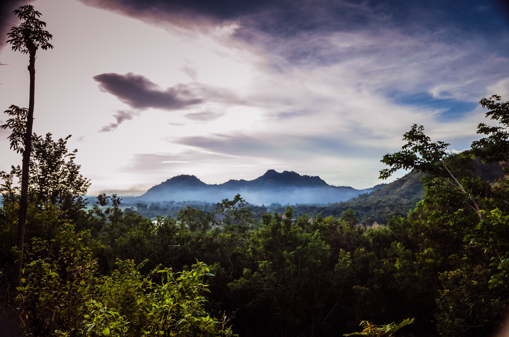

Taniti City, the heart of our island, is where most tourists find themselves captivated. It is renowned for its distinctive native architecture and the pristine white, sandy beaches that gracefully encircle Yellow Leaf Bay. For those seeking to explore beyond the city limits, Taniti offers a plethora of activities:
Each activity offers a unique way to experience the charm and beauty of Taniti.
